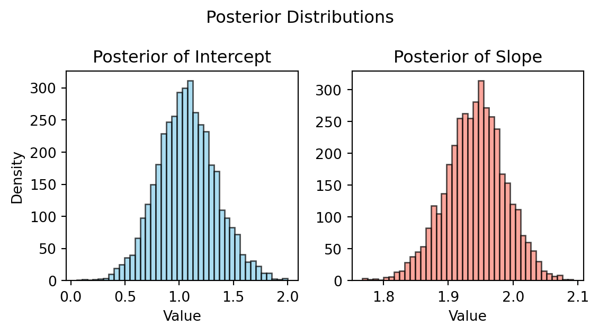

Integrating Automated Agents Into Single-Engine Cockpit Operations: A Developmental Study
Summary of Aircraft Evaluations
Aircraft design and development in commercial and military sectors has progressed at a rapid pace from powered flight in 1903 to modern automated and unmanned systems. Design evaluation in aviation is multidisciplinary including individual subsystem design evaluations. Traditionally subsystems can be evaluated in isolation easily such as in wind tunnel testing and CFD simulations.
However, overall aircraft characteristics which stem from the combination of various subsystems is evaluated using test pilot feedback which is often limited due to sample size. Additionally, pilot feedback is usually captured via subjective self assessment which can be prone to bias and may not capture intricacies between individual aircraft subsystems.

Capability Development
The rise in popularity of complicated autonomous systems has shifted focus onto the pilot in aviation safety. The interplay between automation, mental workload, and situational awareness has become a topic of scrutiny as literature suggests that increased automation can result in an overall decrease in operator performance.
With readily available sensors and advanced modeling techniques, some researchers have proposed frameworks to increase pilot awareness by adapting the amount of automation in the cockpit by using various time series data channels to quantify conative states.
Current Software Architecture
To overcome these challenges, a novel data acquisition system was developed utilizing open source tools and a distributed architecture.
- Top layer uses a single control application to take in user input for testing configuration (which sensors, participant id#, etc.)
- Listeners receive configuration and manage sensor processes
- Sensors utilize MQTT Broker to route data to appropriate subscribers
- Subscribers include:
- Common time-series database (InfluxDB)
- Web based visualizations for real time dashboards (Grafana)
- Real time processing applications (Statistical models)

Development History
Initial LabVIEW Prototyping


Intermediate Version


Operational Realism Test Framework


Workload and Automation
First battery of tests were focused on evaluating sensor capabilities and inferential modeling of multivariate physiological datasets. Experimental procedures focused on two independent variables.
- Working memory load via secondary task (n-back)
- Automation state (autopilot on/off)
Data acquired included EEG, HRM, NASA-TLX, and flight metrics. The total dataset exported from the common time-series database contained ~145 million records.
Initial frequentist analysis failed when modeling physiological data due to invalid assumptions of independence and linearity. Due to this, analysis utilized general multivariate mixed effects modeling with parameters optimized via Bayesian MCMC sampling.

Bayesian Solution
Bayes’ theorem is expressed as: \[ P(A|B)=\frac{P(B|A) \cdot P(A)}{P(B)} \]
Considering our model parameters as a distribution allows for estimation via application of this theorem.
\[ P(\beta | y,X)=\frac{P(y| \beta, X) \cdot P(\beta | X)}{P(y | X)} \]

Results


Takeaways
- For a sample size of 5 participants under 4 different experimental conditions TLX didn’t indicate any statistical significant change across conditions even when included as a predictor in the model.
- Physiological metrics show meaningful change across workload and automation conditions
- HRV increases across test conditions but decreases within flight phases
- HR/RR shows inverse relationship to HRV which is expected
- MWL indicates statistically significant relationship but is likely designed for working memory
- Incorporating channels such as power spectral densities for EEG electrodes may provide additional insights but increases model complexity
- These findings support time-series analysis such as feature extraction in order to better infer what is significant across participants
Physiological Correlates of Cognitive States
The developed capability to collect and analyze physiological data in ecological environments poses many challenges when considering real-time applications. The two experiments conducted showcase the confounding nature of EEG responses across cognitive states such as mental workload, engagement, and spatial/situational awareness. The modeling displayed in these results highlights how the complicated nature of physiological datasets lends itself to equally complex modeling techniques. Complex algorithms have become more ubiquitous and may be able to lend predictability over readability. Such models include: